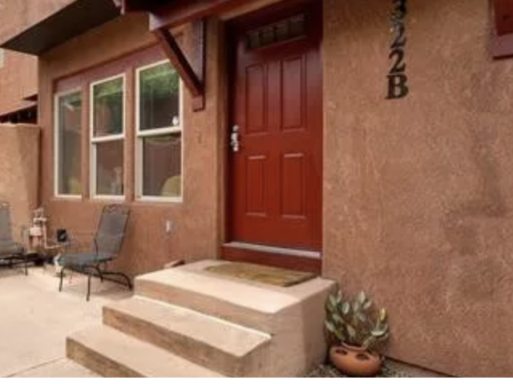

A hybrid 5th grade Earth Science Unit · Colorado Springs specific
Where does the rain go?
A 2-week unit on how water moves between Earth's water sources (lakes, rivers, oceans, etc.) and the sky. Students will learn how that movement drives the weather outside the classroom window.

Unit Focus
- The hydrosphere–atmosphere interaction.
- How water moves between Earth's water and the air
- How the water/air movement connects to our weather.
Two-Week Schedule
Three in-person days and two remote days each week.
- In-person days carry anything hands-on or messy, labs, model building, group discussion.
- Remote days carry content delivery and lower-stakes independent practice.
Week One
Week Two
Unit Learning Studio
Click on the colored squares below to visit unique learning materials to help you learn more about the water cycle.
Water Mindmap
A visual map connecting the water cycle's key terms and stages.
Water Cycle Flashcards
Quick self-check flashcards covering evaporation, condensation, precipitation, and collection.
Passage of Water
Dive into the Passage of Water, a three-part interactive experience that illustrates the planet's dwindling freshwater reserves.
The Planetary Engine of Earth's Water
An audio coversation discussing the water cycle for the audience of a 5th grader
USGS Water Cycle for Kids
Illustrated overview of evaporation, condensation, precipitation, runoff, and groundwater.
USGS Water Cycle for Kids
Illustrated overview of evaporation, condensation, precipitation, runoff, and groundwater.
USGS Water Cycle for Kids
Illustrated overview of evaporation, condensation, precipitation, runoff, and groundwater.
USGS Water Cycle for Kids
Illustrated overview of evaporation, condensation, precipitation, runoff, and groundwater.